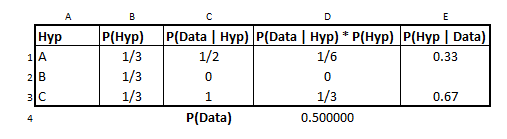
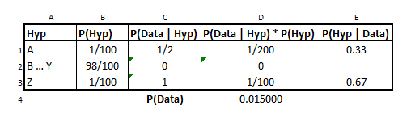

Monty Hall and Bayes
Overview
A bit of a brain-wrinkler, the Monty Hall is one of the more famous problems to come out of probability theory.
You probably know the setup:
- 3 Doors: A, B, C
- 1 has a prize, 2 have a dud
- You pick a door
- Monty Hall opens a second door, revealing a dud
- Do you switch to the open door?
You might have memorized that the optimal solution is “always switch.” But memorizing the intuition, all you have to remember is the phrase “You picked A and he chose B.”
We’ll get into the math of it in a minute, but using this phrase, let’s examine all of the 3 scenarios for where the prize is.
It was actually behind A. If you picked A and he chose B, then his B choice would have been at random between two bad doors.
It was actually behind B. If you picked A and he chose B then he would have revealed the prize, which he wouldn’t do.
If it was actually behind C. If you picked A and he chose B, then he would have picked the only door that wouldn’t reveal the prize.
Also worth noting that it doesn’t matter which of the 3 doors we pick at the beginning– this strategy holds regardless.
With Tables
Working through this problem using our table method involves careful population of the various cells.
For starters, our “Data” that we observed will continue to be the phrase “You picked A and he chose B.” Similarly, the Hypothesis is “Which door contains the prize?”
from IPython.display import Image
Image('images/monty_table_1.PNG')
- Because all 3 doors are equally likely at first, Column
Bis trivial. - Column
Cfollows from our scenario checking above - Column
DandEare straight-up math, just like our last notebook.
Looking at this table, it’s clear that the “Switch” strategy yields a win 2⁄3 of the time.
Variations
There are a couple interesting variations worth exploring to cement your intuition for this problem.
100 Doors
In a short YouTube video on the topic, Numberphile restates the problem, but instead of having 3 doors and revealing 1, we instead have 100 doors and the host reveals 98 of them.
They go on to say that this is intuitively more palatable because you can “feel” the possibility of door 37 being correct “concentrating” around it.
Image('images/monty_numberphile.PNG')
Interestingly, though, reconstructing this table to account for the 98 doors that are eliminated (B...Y), we can see that the resulting “switch and win” still yields the same 1⁄3 : 2⁄3 relationship
Image('images/monty_table_2.PNG')
4 Doors, Open 1
So the number of opened doors doesn’t change our strategy as long as it comes down to a decision between Switch and Stay, but what if we trim down to more than 2?
Remembering our throughline “Data observation” of “You picked A and he chose B”, we construct a new table.
Again, column B is trivial. And D and E are, again, plug-and-chug. The interesting part of this problem comes in how we fill out Column C. Going through the options.
The prize is behind A. “You picked A and he chose B.” Then B was a random choice, because any of the 3 remaining doors wouldn’t have a car. The prize was behind B. “You picked A and he chose B.” Again, impossible. The prize was behind C. “You picked A and he chose B.” So Monty can either select B or D and still not show a car. The prize was behidn D. Same as above, but with C or D.
Image('images/monty_table_3.PNG')
An interesting consequence of this is that even though we don’t enjoy the same “two times more likely to win” property as before, we still have a better shot at finding a prize if we elect to switch and randomly pick from the remaining doors.